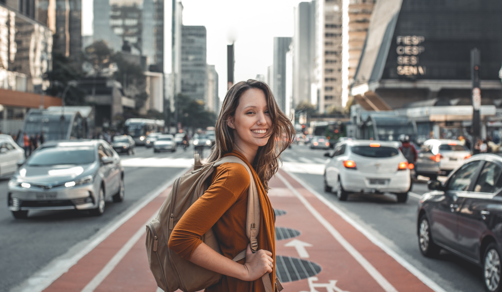
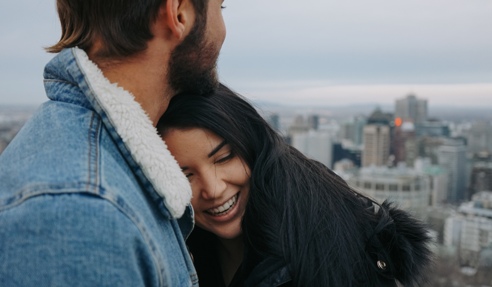

9 причин, почему путешествия делают нас счастливее
15.11.2019
Что первым приходит на ум, когда вы произносите слово «путешествие»? Покупка выгодных билетов на самолет? Незабываемые инстаграм-закаты? Горные переходы с тяжеленными рюкзаками? Любое путешествие может быть захватывающим, волнующим и богатым на приключения — и это гораздо больше, чем просто потягивать «Маргариту» на залитом солнцем пляже.
Совсем не новость, что путешествия хороши для физической формы (гастротуры в Тоскану — не в счет), но что еще приятнее, согласно исследованиям психологов, изучение новых мест очень благотворно для психического и эмоционального здоровья. Иными словами, путешествия делают нас счастливее.
1. МЫ СТАНОВИМСЯ УВЕРЕННЕЕ В СЕБЕ
Согласитесь, куда проще завести новых друзей в путешествии, чем перемещаясь по привычному маршруту работа — дом. Сосед по креслу в самолете по пути в Лондон может стать вашим мужем, попутчик по экскурсионному туру на Макчу-Пикчу — будущим работодателем, а милая девушка, с которой вы заказали одиноковые коктейли в чикагском баре, — подругой на всю жизнь. Все это — реальные истории, которые могут произойти и с вами. Согласитесь, куда проще завести новых друзей в путешествии, чем перемещаясь по привычному маршруту работа — дом.
2. ОБЗАВОДИМСЯ ДРУЗЬЯМИ
Согласитесь, куда проще завести новых друзей в путешествии, чем перемещаясь по привычному маршруту работа — дом. Сосед по креслу в самолете по пути в Лондон может стать вашим мужем, попутчик по экскурсионному туру на Макчу-Пикчу — будущим работодателем, а милая девушка, с которой вы заказали одиноковые коктейли в чикагском баре, — подругой на всю жизнь. Все это — реальные истории, которые могут произойти и с вами.
3. ПОЛУЧАЕМ ПОЛОЖИТЕЛЬНЫЕ ЭМОЦИИ
Искреннее дружелюбие не зависит от уровня благополучия и легко вызывает взаимное чувство — увидев широкие улыбки на лицах жителей лаосских или филиппинских деревень, невозможно не улыбнуться в ответ. Прекрасно, если эта привычка становится верным спутником — мир заслуживает распространения эпидемии позитива.
4. ЗАНОВО ЦЕНИМ ТЕХ, С КЕМ В РАЗЛУКЕ
Покидая привычную обстановку и близких людей, надолго или не очень, мы учимся больше ценить их. Никто не будет слушать рассказы о приключениях в дальних странах с таким вниманием, как друзья и родственники, готовые из любви к нам терпеть восторженные монологи о чудесах планеты. Ну и потом, удивительный момент встречи после разлуки всегда дарит особенные эмоции.
5. УЧИМСЯ НОВОМУ
Независимо от того, чем мы занимаемся в странствиях, это наполняет жизнь опытом и знаниями, будь то мастер-классы тайваньской кухни, уроки испанского в Колумбии, практика дайвинга на Мальдивах или йога на Гоа. Мозги работают активнее, в крови бурлит адреналин, каждый день делает нас счастливее — по выводам психологов, это естественный процесс, когда мы учимся тому, что находим приятным.
«До того, как ты впервые покинешь родину, живешь, думая, что так везде, а потом понимаешь, что вокруг полно разных людей, культур, менталитетов, — говорит Лино Регуш, автор блога crazy-cucumber.com, начатого на Бали и ставшего успешным кулинарным проектом в Новой Зеландии. — Чтобы путешествие вышло удачным, важно переключиться на режим open mind: смотреть на мир широко раскрытыми глазами, принимать обычаи других стран, пробовать все, что кажется интересным, не пытаясь адаптировать под себя окружающую действительность. Так мы получаем уникальный опыт, который как будто обновляет нас и, конечно, делает счастливее».
6. ОТДЫХАЕМ ОТ ОНЛАЙН-ЗАВИСИМОСТИ
Этот шанс используют далеко не все, но, тем не менее, на планете еще есть потрясающе красивые места, куда не добирается вай-фай и мобильная связь. Путешествия без выходов в сеть хороши тем, что позволяют насладиться моментом «здесь и сейчас», забыв о надоедливых сообщениях и отвлекающих лайках. Попробуйте — это здорово отрезвляет и помогает прислушаться к своим истинным чувствам и желаниям.
7. НАСЛАЖДАЕМСЯ ВРЕМЕНЕМ ДЛЯ СЕБЯ
Хотя этот пункт связан с предыдущим, необязательно отключаться от связи, чтобы восстановить внутреннюю гармонию. Путешествия дарят возможность восстановить баланс, развеять стресс по ветру, напитаться энергией солнца, найти время побыть наедине с собой — даже если это тур в большой компании. Для влюбленных это хороший шанс проверить отношения на прочность или настоящая «сказка странствий», полная романтики и открытий.
8. ПОЛУЧАЕМ ВПЕЧАТЛЕНИЯ НА ВСЮ ЖИЗНЬ
Из путешествий мы привозим массу впечатлений, которые остаются навсегда — в памяти, в постах соцсетей, видеороликах и фотографиях.
«В каждом путешествии я ощущаю, что мир больше, лучше и разнообразнее, чем казался еще секунду назад, — рассказывает travel-журналист Юлия Смирнова. — Оказывается, можно взять и своими руками (то есть держа в них штурвал яхты ) добраться с одного континента на другой. Я реально почувствовала своего ликующего внутреннего Колумба, когда пришла из европейской Испании в африканское Марокко через Гибралтар. А можно просто смотреть на море. Любое, хотя мне роднее всего Белое и Атлантический океан. И это уже счастье!»
9. ПОДНИМАЕМ НАСТРОЕНИЕ ВОСПОМИНАНИЯМИ
Большинство путешествующих энтузиастов непрерывно планируют следующие поездки, но даже они с удовольствием вспоминают приятные моменты уже совершенных. Собственно, такие мысли и зовут снова в дорогу — за новыми впечатлениями.
«Путешествия для меня — невероятная возможность стать лучше и образованнее, узнать себя и мир, — говорит Дарья Сиротина, автор популярного блога о путешествиях darsik.com. — Когда фрагменты складываются в единую картину, когда где-нибудь на краю земли ты видишь детали, в которых читаешь рифму с чем-то хорошо тебе знакомым, — это захватывающее чувство. Огромное удовольствие — разбирать сделанные в поездках фотографии. Ну а самое большое счастье — возвращаться туда, где тебе было хорошо».